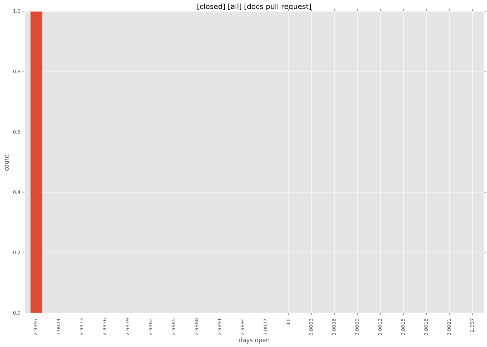
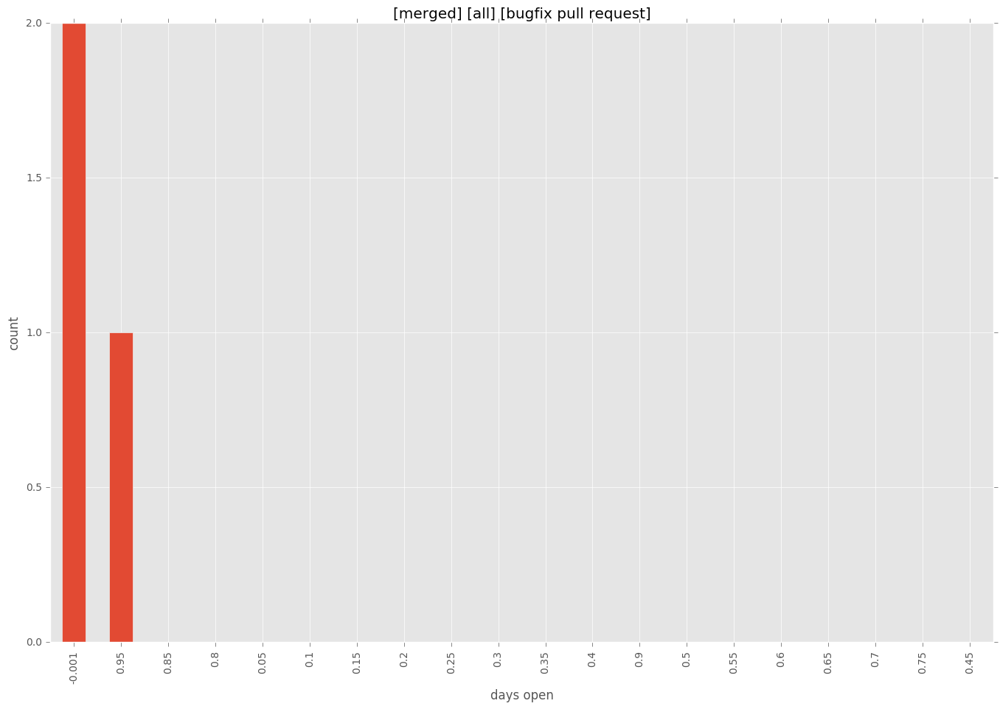
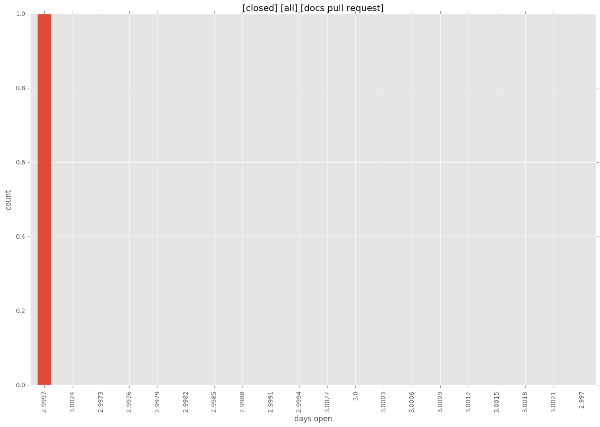
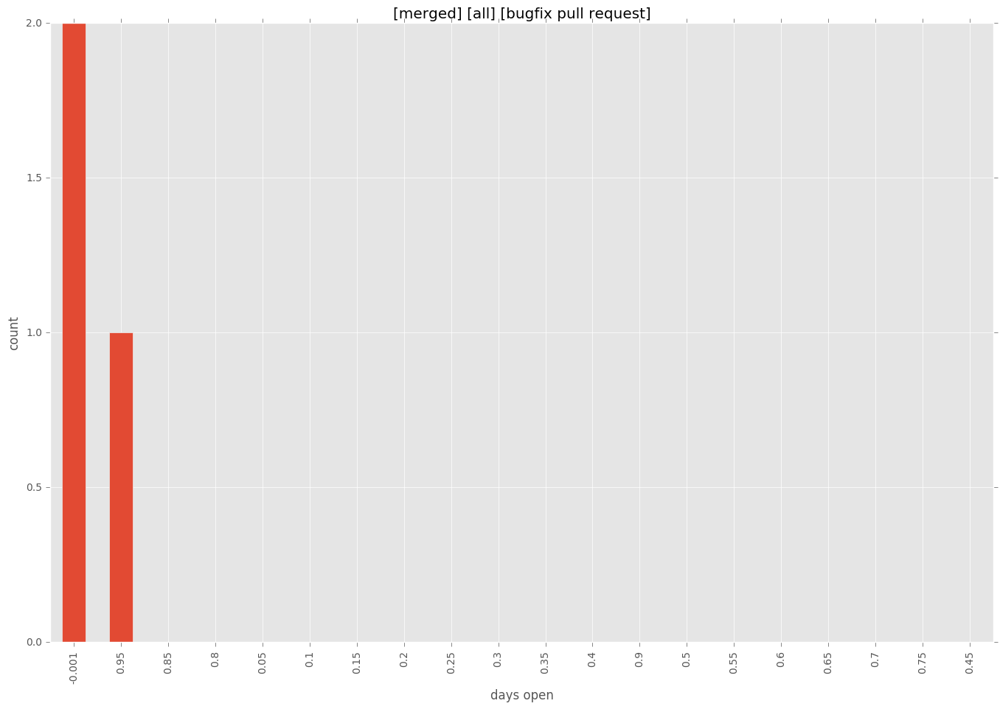

total issue counts
feature pull request: 4
bugfix pull request: 3
pullrequest: 9
docs pull request: 1
new plugin: 1
issue history
days open by issue type
bugfix pull request
count: 6
std: 0.516397779494
min: 0
max: 1
median: 0.0
mean: 0.333333333333
all
count: 16
std: 5.04479930225
min: 0
max: 16
median: 0.0
mean: 2.375
pullrequest
count: 0
std: nan
min: nan
max: nan
median: nan
mean: nan
docs pull request
count: 2
std: 0.0
min: 3
max: 3
median: 3.0
mean: 3.0
feature pull request
count: 6
std: 7.77174369109
min: 0
max: 16
median: 0.0
mean: 5.0
new plugin
count: 2
std: 0.0
min: 0
max: 0
median: 0.0
mean: 0.0
closures grouped by total days open


 


